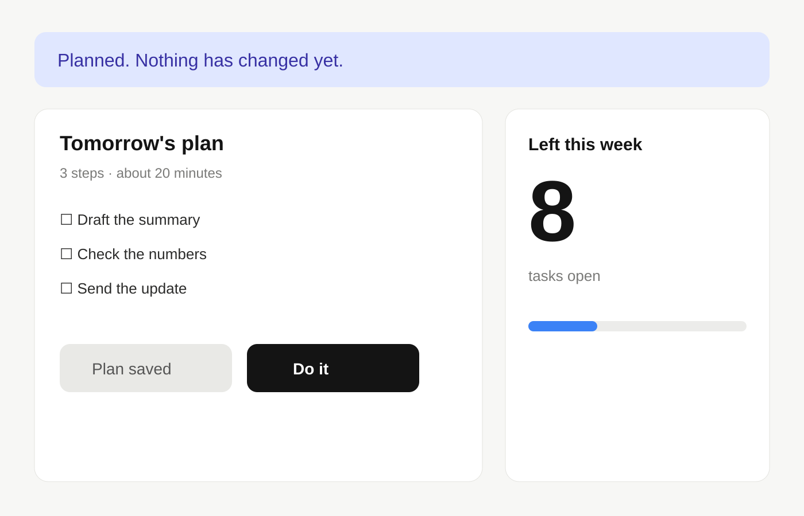

Event name · Project showcase

Builder · Speaker · Your city
Your Name (handle)
One line about what you do. One line about tonight.
02Demo · real answer
What changed this week?
Bonus
“Two meetings match. Which one moves?”

Before → after
Click once. Watch it change.
Plan → nothing moves.
Do it → 8 becomes 5.


How long it took
One evening. Mostly waiting.
83 minstart to finish
4approaches tried
17tests passing
$0extra spend, on an existing plan

How it’s made
Four steps. No magic.
- 01Write it down once
- 02Plug it in
- 03Ask in plain English
- 04Check the answer

Real outputsthree of the screens
Long answers
Let long pages scroll themselves.
TipCrop the browser chrome and keep the content. Tall captures scroll slowly and loop.


Want more?
Then you can push for more.
1A no-code app
2Code it properly
Thank you!
Big words. Real demos. Honest fallbacks.
Thanks for staying for the demo ✓
 Grab the slides
example.com/slides
Grab the slides
example.com/slides